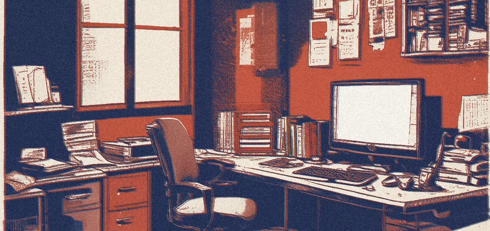

쉬어가기 · 가입·저장 없음
일하다 잠깐,
쉬어가기
하나에 1~3분이면 끝나는 놀이 세 개. 고른 답은 어디에도 남지 않고, 창을 닫으면 그걸로 끝입니다.
01
나는 어떤 일 유형?
회사·집에서 흔히 겪는 장면 아홉 개. 제일 나 같은 걸 고르면 됩니다. 정답은 없고, 맞아도 틀려도 웃고 넘기면 돼요.
01 / 09
내 결과
02
야근 범인을 찾아라
수요일 밤 9시 40분. 김대리는 이번 주 사흘째 야근 중입니다. 잠깐 자리를 비운 사이 켜 둔 PC 를 들여다보고, 야근을 만든 범인을 골라 보세요.

왼쪽 아이콘을 눌러 단서를 열어 보세요. 다섯 개 다 안 봐도 괜찮습니다.
메신저 — 오늘
팀장 · 18:05김대리, 오늘 주문 현황 정리 9시 전에만 부탁해요.
나 · 18:06네, 지금 사이트 세 군데 돌면서 보고 있어요.
박주임 · 18:30그거 어제도 하지 않았어요?
나 · 18:31매일 해요… 어제 것도 그제 것도 제가 했어요.
박주임 · 18:31ㅠㅠ 힘내요. 저 먼저 갑니다
나 · 20:12B 사이트 또 로그인 풀려서 처음부터 합니다
매일할일.txt — 메모장
[매일 저녁 — 주문 현황] 1. A 몰 관리자 로그인 → 새 주문 수 적기 2. B 몰 관리자 로그인 → 새 주문 수 적기 3. C 몰 관리자 로그인 → 새 주문 수 적기 4. 반품·취소도 각각 다시 확인 5. 엑셀 「주문현황」 열어서 붙여 넣기 6. 파일 이름에 날짜 붙여 저장 7. 팀장님께 보내기 ※ 중간에 로그인 풀리면 1번부터 ※ 월말엔 지난달 것도 한 번 더
바탕화면\주문현황
- 주문현황_1118.xlsx작성 중
- 주문현황_1117.xlsx화 20:52
- 주문현황_1116.xlsx월 20:47
- 주문현황_1113.xlsx금 20:58
- 주문현황_1112.xlsx목 20:44
- 주문현황_1111.xlsx수 20:50
- 주문현황_최종_진짜최종.xlsx지난달
파일은 날마다 하나씩, 저장한 시각은 늘 저녁 9시 언저리.
일정 — 이번 주
월주간 회의 10:00–10:30
화
수거래처 통화 15:00–15:20
목
금팀 점심
이번 주 회의는 다 합쳐 50분. 오후는 대부분 비어 있다.
방문 기록 — 오늘
- A 몰 관리자 · 주문 목록20:31
- B 몰 관리자 · 로그인20:12
- B 몰 관리자 · 주문 목록19:48
- B 몰 관리자 · 로그인19:40
- C 몰 관리자 · 반품 목록19:22
- A 몰 관리자 · 주문 목록18:10
- 회사 근처 국밥 맛집11:52
점심 검색은 딱 한 번. 저녁 내내 같은 관리자 화면을 오갔다.
야근을 만든 범인은?
03
숨 고르기 한 판
원이 커질 때 4초 들이쉬고, 작아질 때 6초 내쉽니다. 세 번이면 30초. 어깨에 힘이 들어가 있었다면 내쉴 때 같이 내려 보세요.
3번 · 30초